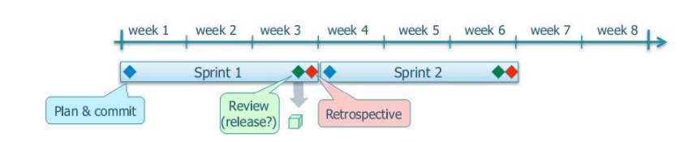

Intro
Valeryia Strom
Senior Software Testing Engineer at EPAM Systems
Scrum - is a methodology
- Traditional
- Agile
- Split your organization into small, cross-functional, selforganizing teams.
- Split your work into a list of small, concrete deliverables. Sort the list by priority and estimate the relative effort of each item.
- Split time into short fixed-length iterations (usually 1 – 4 weeks), with potentially shippable code demonstrated after each iteration.
- Optimize the release plan and update priorities in collaboration with the customer
- Optimize the process by having a retrospective after each iteration.


- Beginning of iteration: an iteration plan is created. Team pulls out specific items from the product backlog, based on product owner's priorities
- During iteration: Team focuses on completing the items they committed to
- End of iteration: Team demonstrates working code to the relevant stakeholders, this code should be potentially shippable. Then the teams conducts a retrospective

- Scrum says you should have cross-functional teams. So who should be on that team? Don't know - experiment
- Scrum says you should limit your WIP. What should the limit be? Don't know - experiment.
Change something -> Find out how it went -> Learn from it -> Change something again


- Scrum is pull scheduling system, which corresponds to the JIT (Just In Time) principle of Lean.
- Scrum is based on continuous and empirical process optimization, which corresponds to the Kaizen principle of Lean.
- Scrum emphasizes responding to change over following a plan, one of the four values of the agile manifesto.

- It's Simple
- It's Simple
- Ideal for difficult projects
- It's Simple
- Ideal for difficult projects
- Quick releases keep the team motivated and the users happy